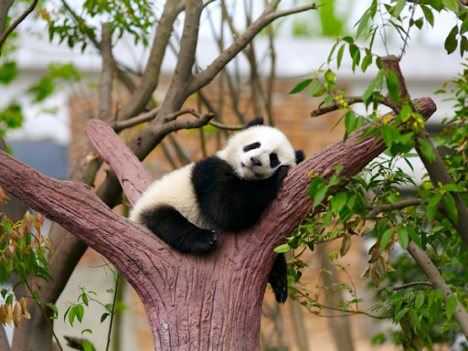
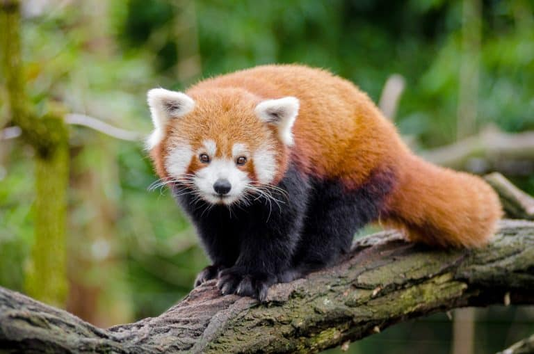

Los osos pandas
El panda, oso panda o panda gigante (Ailuropoda melanoleuca) es una especie de mamífero del orden de los carnívoros. La especie es nativa de China central el panda gigante habita en regiones montañosas, principalmente las de Sichuan, hasta una altura de 3500 m s. n. m. Los orígenes del panda no son muy seguros aunque hay expertos que aseguran que su linaje podría deberse a la especie de pandas rojos. Aunque la característica más emblemática de los pandas sea el blanco y negro, la verdad es que los pandas han sido capaces de adaptarse a otras especies que incluso se han visto osos pandas de color rojo y marrón. Sin dejar a un lado de que estos han hecho todo lo posible de romper con los esquemas establecidos y adaptarse a cualquier ambiente en el que se encuentren. Existen dos tipos de osos pandas:
| Especie | Familia | Medida |
|---|---|---|
| Oso panda | Ursidae | 1.5-1.8 m |
| Panda rojo | Ailúridos | 60 cm |
 
Características de los osos panda:
Alimentación de los osos panda:
Su alimentación es muy variada, pero principalmente se alimentan del bambú, algo que es muy ventajoso para ellos debido a que las zonas en las que habitan son bosques llenos de bambú. Además, se alimentan de:
- bambú
- huevos
- raíces
- roedores
- pequeños mamíferos

Peligro de extinción
Este animal está considerado como una de las especies en peligro de extinción por lo que múltiples organizaciones en el mundo han tratado de cuidarlo y preservarlo lo mejor posible. Es tanto así la vigilancia de la preservación de los pandas que las poblaciones donde estos se encuentran son constantemente observadas, solo con la finalidad de que en realidad se pueda garantizar todos los grupos que viven y su seguridad. Por ello se tiene la noción de al menos casi 200 osos pandas en cautiverio solo para evitar su extinción. Pandas en peligro de extinción